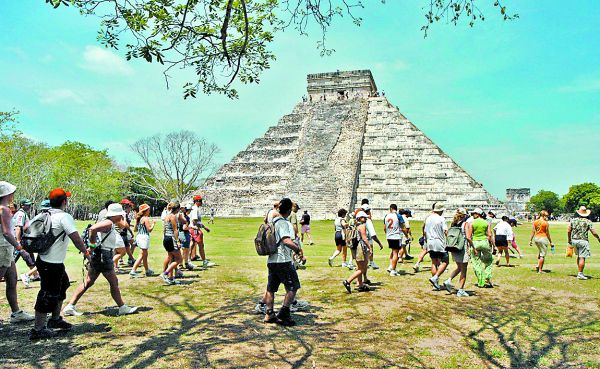

Ciudades Antiguas de Europa: Desde Atenas con sus ruinas griegas hasta Roma con sus monumentos del Imperio Romano, Europa ofrece un viaje fascinante a través de la historia antigua. Festivales en Asia: Festivales como el Songkran en Tailandia, el Diwali en India y el Hanami en Japón ofrecen una experiencia inmersiva en la cultura local a través de celebraciones coloridas y tradiciones centenarias. Sitios Arqueológicos en América Latina: Destinos como Machu Picchu en Perú, Tikal en Guatemala y Chichén Itzá en México son testigos de civilizaciones antiguas y ofrecen una visión única de la historia precolombina.
